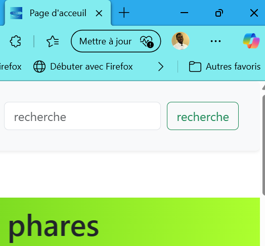

Temps de lecture : 15 Minutes
L'éditeur de texte de votre choix est ouvert et vous êtes motivé un max pour faire votre premier fichier HTML. Ça tombe bien, car dans ce chapitre, on commence à pratiquer.
Ouvrez votre éditeur de texte et créez un nouveau fichier (Fichier > Nouveau). Écrivez ce que vous voulez, puis enregistrez le fichier (Fichier > Enregistrer ). Nommez-le avec une extension .html comme mapage.html et sauvegardez-le à l'emplacement souhaité. Voilà, prêt pour votre premier fichier HTML !
Une balise HTML, ou "tag" en anglais, est un élément qui sert à structurer et organiser le contenu d'une page web. Elle indique au navigateur comment afficher ou interpréter une partie spécifique de ce contenu. Les balises sont écrites entre des chevrons <...>. Par exemple, <p> est une balise qui signale un paragraphe. La plupart des balises s'utilisent en paire : une balise ouvrante <p> et une balise fermante </p>, avec le contenu placé entre les deux.
Une balise normale s'ouvre et se ferme. On a donc une balise ouvrante et une balise fermante. Elle indique au navigateur web les délimitations de l'impact de la balise. Ci-dessous un exemple de balise normale. <h1>Hello</h1>
Ces balises n'ont pas de balise ouvrante ni fermante. Elle servent le plus souvent à insérer un élément autonome à un emplacement précis.
C'est pourquoi il n'est pas nécessaire de délimiter le début et la fin de la balise. Ci-après l'exemple d'une balise auto-fermante. <balise />.
Il est important de préciser que le slash / et l'espace de fin ne sont pas obligatoires.
Les attributs sont des options ajoutées aux balises HTML pour fournir des informations supplémentaires. Ils se placent dans la balise ouvrante ou auto-fermante et doivent être uniques et écrits en minuscule. <balise attribut="1">Hello</balise>
Tous les documents HTML doivent commencer par une déclaration de type de document : .<!DOCTYPE html>
Le document HTML lui-même commence par <html> et se termine par </html>.
La partie visible du document HTML est comprise entre <body> et </body>.
Je vous invite maintenant, à copier-coller le code ci-dessous dans votre fichier.
<!DOCTYPE html>
<html>
<head>
<meta charset="utf-8" />
<title> Titre de la page affiché dans la barre du navigateur</title>
</head>
<body>
Contenue qui s'affiche sur la page
</body>
</html>
Depuis le début du cours, on avance tranquillement et là, bam, on rentre dans le vif du sujet. Tu ne comprend plus rien ?🤣 C'est quoi toutes ces balises 😖?! Au secours ! Pas de panique Lorraine, nous allons disséquer chaque ligne pour toutes les comprendre.
La déclaration <!DOCTYPE> représente le type de document et aide les navigateurs à afficher correctement les pages Web. Elle précise la version du HTML que le fichier utilise. En l’occurrence, cette ligne précise que l'on souhaite écrire en HTML5. Il ne doit apparaître qu’une seule fois, en haut de la page (avant les balises HTML). La déclaration <!DOCTYPE> n’est pas sensible à la casse. C’est à dire que cette déclaration peut être écrite en majuscules <!DOCTYPE> ou en minuscules <!doctype>, sans aucune différence dans son fonctionnement. Les navigateurs interprètent ces deux versions de manière identique.
Cette balise <html> est la principale de notre fichier HTML. En effet, elle va englober toutes les prochaines. La balise ouvrante est tout au début de votre fichier et la balise fermante est tout à la fin. Un fichier HTML comporte automatiquement cette balise.
Nous allons découvrir à la suite deux balises très importantes. La première est la balise <head>. Elle correspond à l'en-tête de votre fichier HTML. Cette zone ou section contient les informations générales de votre page. Elle indique au navigateur web entre autres, l'encodage des caractères spéciaux, des déclarations de fichiers, le titre, et plein d'autres informations précieuses sur la page. Les informations contenues entre cette balise ne sont pas affichées à l'utilisateur à l'exception de quelques balises, comme le titre que l'on retrouve dans l'onglet du navigateur web.
La deuxième balise très importante est la balise <body>. Elle est très importante car c'est dans cette balise que nous allons écrire la majeure partie de notre code. L'ensemble des informations contenues dans cette balise s'affichent à l'utilisateur. Elle englobe, tout comme la balise <html>, une grande quantité d'informations. Dans notre fichier d'exemple, la balise est pour le moment vide. C'est normal, ne sois pas trop pressé, jeune fille !
Là ça vient en petard ! Qu'est-ce que c'est que cette balise ? Il n'y a pas de quoi se mettre mettre dans les dohis. Cette balise indique l'encodage que votre fichier HTML utilise. Elle doit être dans le <head> de votre page. Attention à ne pas confondre avec la langue de votre page, ce sont deux notions différentes. Concentrons-nous d'abord sur l'encodage, nous reviendrons ensuite sur la langue.
Il est primordial d'indiquer au navigateur web la langue du contenu de la page.
Les informations données sur la langue du contenu sont notamment importantes pour les moteurs de recherches,
mais également pour les outils de traduction automatique.
Cette information n'est pas obligatoire mais fortement recommandée. Pour indiquer la langue d'un fichier HTML,
il faut préciser un attribut à la balise <html>. Pour notifier la langue française pour une page HTML,
il faut faire comme ci-dessous.
<html lang="fr">
<!DOCTYPE html>
<html lang="fr">
<head>
<meta charset="utf-8" />
<title> Titre de la page affiché dans la barre du navigateur</title>
</head>
<body>
Contenue qui s'affiche sur la page
</body>
</html>
Comment connaître la valeur de l'attribut pour toutes les langues ? C'est très simple, la norme ISO 639-1 s'occupe de ça. Bonne lecture
Cette balise correspond tout simplement au titre de votre page. Elle doit être dans le <head> de votre page.
Toutefois, ce dernier ne s'affiche pas dans la page mais dans l'onglet de votre navigateur web. Si on reprend notre premier fichier HTML,
notre titre s'affiche bien tout en haut. Ci-après un exemple.

Les balises HTML s'ouvrent et se ferment dans un ordre précis. Il ne faut jamais l’oublier.
Ce cours sur le HTML en est un parmi tant d'autres. Le web regorge de ressources sur le développement web. Celui-ci a été rédigé par mes soins et est orienté pour les débutants. Il est non-exhaustif. Si vous repérez une erreur ou un oubli, vous pouvez bien évidemment me contacter. me contacter
Ce cours a été rédigé en mars 2025.